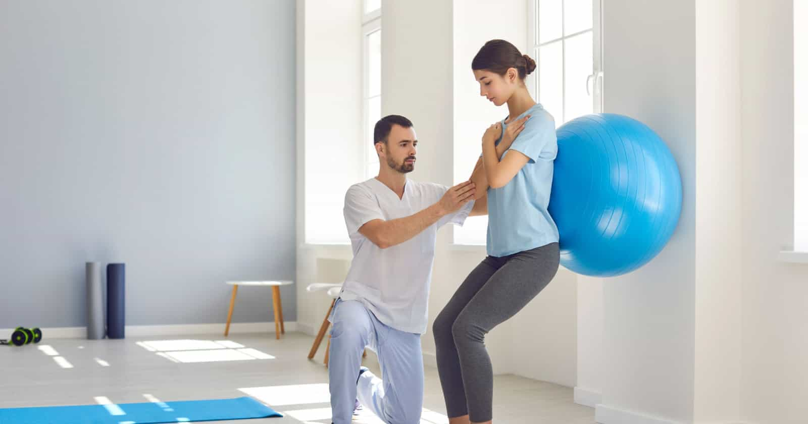
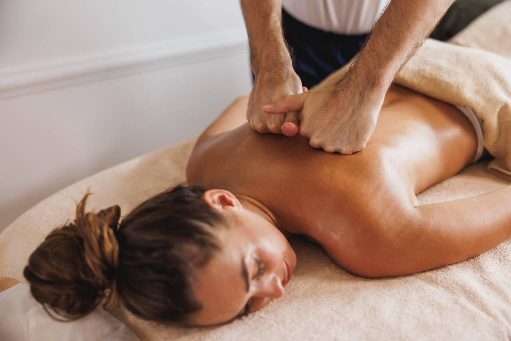
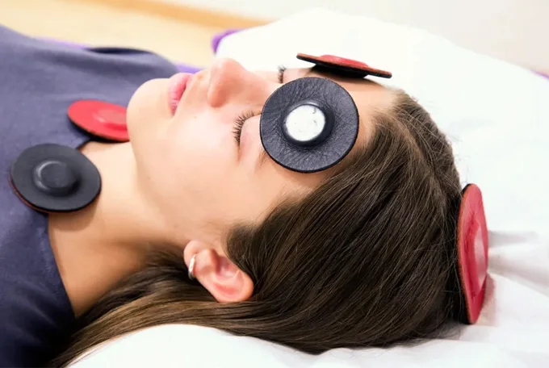

Diferente do Pilates convencional de academia, nossa abordagem terapêutica é desenhada especificamente para reabilitação. Os exercícios são adaptados para tratar patologias de coluna, pós-operatórios e lesões articulares, sempre com o acompanhamento clínico fisioterapêutico.

Baseada na Medicina Tradicional Chinesa, o Tui-ná é uma massagem terapêutica vigorosa que estimula os meridianos de energia do corpo. É indicada para desbloquear o fluxo de Qi (energia vital), aliviar dores crônicas e restaurar o equilíbrio funcional do organismo.

Uma terapia integrativa inovadora que utiliza ímãs de média intensidade para equilibrar o pH do corpo. Ao neutralizar a acidez ou alcalinidade excessiva, criamos um ambiente hostil para vírus e bactérias, estimulando a capacidade natural do corpo de se curar e reduzindo inflamações.